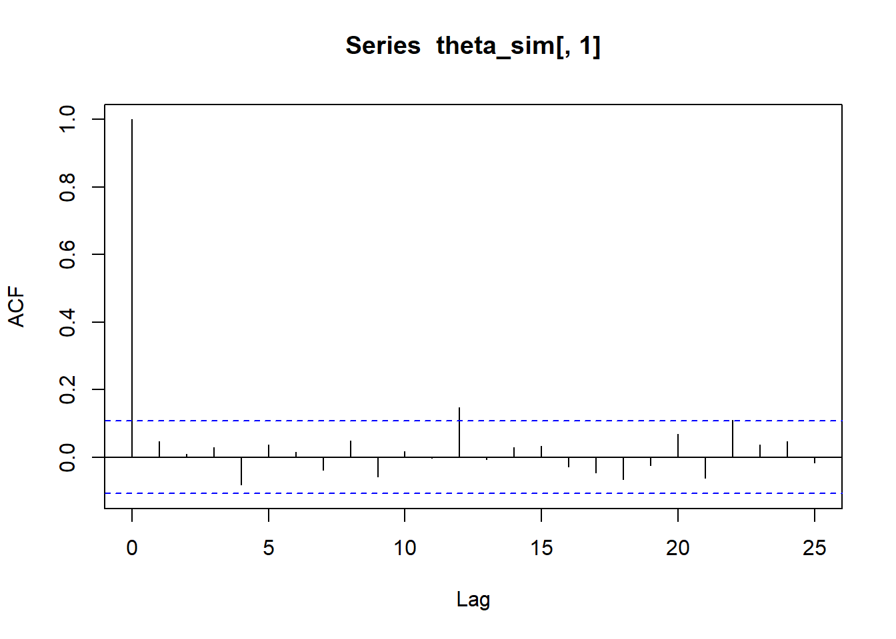

require(gsheet)Carregando pacotes exigidos: gsheeturl = 'https://docs.google.com/spreadsheets/d/1Pg0AGENj8Cf9e5yqvbXnhEZ7jgY3sBSb6ETtGUwZtpQ/edit?usp=sharing'
x = gsheet2tbl(url)
x = x$TempoConsiderando o problema de elicitar uma priori para \(\theta\in\(0,1)\), a distribuição Uniforme(0,1) surge como uma candidato confortável, uma vez que dá probabilidades iguais para quaisquer intervalos de \((0,1)\) de mesmo comprimento.
De modo análogo, se \(\theta\in(a,b)\), a distribuição Uniforme\((a,b)\) é uma escolha interessante quando o objetivo é dar pouco peso para a informação a priori.
Considere então que \(\theta\in\mathbb{R}\). Na prática, há um subintervalo \((a,b)\in\mathbb{R}\) que contém quasse toda a massa da posteriori. Nesse caso, podemos utilizar a priori Uniforme\((a,b)\), obtendo \[f(\theta|\boldsymbol{x})=\frac{L(\theta)\frac{1}{b-a}}{\int_a^bL(\theta)\frac{1}{b-a}d\theta}=\frac{L(\theta)}{\int_a^b L(\theta)d\theta}.\] Se permitirmos que \(a=-\infty\) e \(b=+\infty\), teremos \[f(\theta|\boldsymbol{x})=\frac{L(\theta)\frac{1}{b-a}}{\int_a^bL(\theta)\frac{1}{b-a}d\theta}=\frac{L(\theta)}{\int_\mathbb{R} L(\theta)d\theta}\propto L(\theta).\] Desde que \(\int_{\mathbb{R}}L(\theta)<\infty\), teremos que \(f(\theta|\boldsymbol{x})\) é de fato uma posteriori. A priori associada nesse caso é dada por \[f(\theta)=1\] para todo \(\theta\in\mathbb{R}\). Como essa priori não é uma função densidade, ela é denominada imprópria.
Priori imprópria para o modelo normal
Seja \(x_1,\ldots,x_n\) uma amostra observada do modelo Normal(\(\mu\),1), cuja função de verossimilhança é dada por \[L(\mu)=\frac{1}{(2\pi)^{n/2}}e^{-\frac{n}{2}(\bar{x}-\mu)^2-\frac{n}{2}s^2}.\] Considere a priori imprópria para \(\mu\). Como \[\int_\mathbb{R}L(\mu)d\mu=\frac{1}{(2\pi)^{n/2}}e^{-\frac{n}{2}s^2}\int_{\mathbb{R}}e^{-\frac{n}{2}(\bar{x}-\mu)^2}d\mu=\frac{1}{(2\pi)^{n/2}}e^{-\frac{n}{2}s^2}\sqrt{\frac{2\pi}{n}}<\infty,\] temos que \[f(\mu|\boldsymbol{x})\propto L(\mu)\propto e^{-\frac{n}{2}(\mu-\bar{x})^2},\] ou seja \(\mu|\boldsymbol{x}\sim\hbox{Normal}(\bar{x},1/n)\).
Quando \(\theta\in(0,\infty)\), é usual realizar a transformação \(\lambda = \log(\theta)\in\mathbb{R}\). Considerando uma priori imprópria para \(\lambda\), teremos \[f(\lambda|\boldsymbol{x})=\frac{L(e^{\lambda})}{\int_\mathbb{R}L(e^{\lambda})d\lambda},\] desde que a integral no denominador seja finita. Podemos então utilizar o método do jacobiano para obter a posteriori para \(\theta\):
\[f(\theta|\boldsymbol{x})\propto L(\theta)\frac{d\lambda}{d\theta}=L(\theta)\frac{1}{\theta}.\] Portanto, quando \(\theta\in(0,1)\), utilizamos a priori (imprópria) \[f(\theta)=\frac{1}{\theta},\] para todo \(\theta>0\), considerando que \[\int_0^\infty L(\theta)\frac{1}{\theta}d\theta <\infty.\]
Priori imprópria para a Poisson Seja \(x_1,\ldots,x_n\) uma amostra observada do modelo Poisson(\(\lambda\)). Observe que \[\begin{align}\int_0^\infty L(\lambda)\frac{1}{\lambda}d\lambda&=\int_0^\infty \frac{e^{-n\lambda}\lambda^{\sum_{i=1}^n x_i}}{\prod_{i=1^n }x_i!}\frac{1}{\lambda}d\lambda=\frac{1}{\prod_{i=1}^nx_i!}\int_0^\infty\lambda^{\sum_{i=1}^n x_i-1}e^{-n\lambda}d\lambda\\&=\frac{\Gamma(\sum_{i=1}^n x_i)}{\prod_{i=1}^n x_i!}\frac{1}{n^{\sum_{i=1}^n x_i}}<\infty\end{align}\] portanto, a posteriori para \(\lambda\) é \[f(\lambda|\boldsymbol{x})\propto L(\lambda)\frac{1}{\lambda}\propto \lambda^{\sum_{i=1}^n x_i-1}e^{-n\lambda},\] ou seja, \(\lambda|\boldsymbol{x}\sim\hbox{Gama}(\sum_{i=1}^n x_i,n).\)
Assuma que \(\boldsymbol{\theta}\in\mathbb{R}^q\). Seja \(\ell(\boldsymbol{\theta})=\log L(\boldsymbol{\theta})\) a função log-verossimilhança e \(\hat{\boldsymbol{\theta}}\) a estimativa de máxima verossimilhaça para \(\boldsymbol{\theta}\). Considere a seguinte aproximação de \(\ell(\boldsymbol{\theta})\) em séries de Taylor
\[\ell(\boldsymbol{\theta})\approx \ell(\hat{\boldsymbol{\theta}})+\frac{1}{2}(\boldsymbol{\theta}-\hat{\boldsymbol{\theta}})'\mathcal{H}(\hat{\boldsymbol{\theta}})(\boldsymbol{\theta}-\hat{\boldsymbol{\theta}})\] onde \(\boldsymbol{\theta}\) é a matriz hessiana (de derivadas segunda) aplicada em \(\hat{\boldsymbol{\theta}}\).
Deste modo, teremos que \[f(\boldsymbol{\theta}|\boldsymbol{x})\propto \exp\left\{-\frac{1}{2}(\boldsymbol{\theta}-\hat{\boldsymbol{\theta}})'\left[-\mathcal{H}(\hat{\boldsymbol{\theta}})\right](\boldsymbol{\theta}-\hat{\boldsymbol{\theta}})\right\}f(\boldsymbol{\theta})\]
Utilizando a priori imprópria \(f(\boldsymbol{\theta})\propto 1\), temos que \(\boldsymbol{\theta}|\boldsymbol{x}\approx \hbox{Normal}(\hat{\boldsymbol{\theta}},-\mathcal{H}(\hat{\boldsymbol{\theta}})^{-1})\).
Se \(\theta\) for um escalar, teremos
\[f(\theta| \boldsymbol{x} )\propto \exp \left\{ -\frac{1}{2} (\theta-\hat{\theta})^2\left[-\left.\frac{d^2}{d\theta^2}\ell(\theta)\right|_{\theta=\hat{\theta}}\right]\right\}f(\boldsymbol{\theta})\] e, ao utilizar a priori imprópria novamente, teremos \[\theta|\boldsymbol{x}\sim\hbox{Normal}\left(\hat{\theta},-\left.\frac{d^2}{d\theta^2}\ell(\theta)\right|_{\theta=\hat{\theta}}\right).\]
Importante Para que a aproximação normal faça sentido, é necessário que a priori utilizada seja a imprópria ou uma conjugada. Para tanto, é necessário que o espaço paramétrico de \(\theta\) seja a reta e alguma transformação pode ser necessária.
Seja então \(\psi\) o parâmetro original e seja \(\theta=g(\psi)\) o parâmetro transformado tal que \(\theta\in(-\infty,+\infty)\). Após aproximar a posteriori de \(\theta\) para a normal:
Note que as informações necessárias para a aproximação da posteriori acima podem ser obtidas via função optim.
Exemplo
O USGS reune diversas informações. Entre elas, em https://earthquake.usgs.gov/earthquakes/search/, é possível obter informações sobre terremotos ocorridos no globo para um período longo de tempo. Os dados abaixo apresentam o tempo ocorrido entre terremos nos últimos 10 anos (entre maio de 2025 e maio de 2025)
require(gsheet)Carregando pacotes exigidos: gsheeturl = 'https://docs.google.com/spreadsheets/d/1Pg0AGENj8Cf9e5yqvbXnhEZ7jgY3sBSb6ETtGUwZtpQ/edit?usp=sharing'
x = gsheet2tbl(url)
x = x$TempoVamos supor que o modelo Gama(\(\alpha\),\(\beta\)) é adequado para este banco de dados. Embora o modelo Gama possua conjugada, a mesma não é trivial para propósitos de aplicação.
Vamos considerar a aproximação normal para este modelo. Como \(\alpha,\beta>0\), considere as seguintes transformações para a reta:
Deste modo, \(\boldsymbol{\theta}\in\mathbb{R}^2\).
A função de log-verossimilhança deste modelo é
logveross <- function(theta){ sum(dgamma(x, exp(theta[1]), exp(theta[2]), log = T))
}Podemos utilizar a função optim para obter as estimativas de máxima verossimilhança e a matriz hessiana. Contudo, primeiro devemos observar que esta função é um minimizador, logo, queremos que \(\boldsymbol{\theta}\) que minimize \(-\ell({\boldsymbol{\theta}})\).
opt <- optim( c(0,0), function(q) -logveross(q), hessian = T)
opt$par
[1] -0.3936871 -0.1853257
$value
[1] 3295.181
$counts
function gradient
67 NA
$convergence
[1] 0
$message
NULL
$hessian
[,1] [,2]
[1,] 6163.371 -3038.916
[2,] -3038.916 3038.663No objeto opt, a lista par é o vetor com as estimativas de máxima verossimilhança, enquanto que hessian é o valor de \(-\mathcal{H}(\hat{\boldsymbol{\theta}})\).
A inversa de opt$hessian vai dar a matriz de covariância entre \(\theta_1\) e \(\theta_2\) da posteriori.
Sigma <- solve(opt$hessian)
Sigma [,1] [,2]
[1,] 0.0003200819 0.0003201086
[2,] 0.0003201086 0.0006492275Agora, podemos simular \(\theta_1\) e \(\theta_2\) a posteriori, considerando a priori imprópria:
require(mvtnorm)Carregando pacotes exigidos: mvtnormtheta_sim <- rmvnorm(500, opt$par, Sigma)Por último, podemos fazer inferências sobre \(\alpha=\exp\{\theta_1\}\) e \(\beta=\exp\{\theta_2\}\):
alpha = exp(theta_sim[,1])
beta = exp(theta_sim[,2])
# intervalos de credibilidade para alfa
quantile(alpha, c(.025,.975)) 2.5% 97.5%
0.6529422 0.6984087 # intervalos de credibilidade para beta
quantile(beta, c(.025,.975)) 2.5% 97.5%
0.7908393 0.8766698 Com a amostra a posteriori simulada, podemos simular amostras da preditiva a posteriori.
n <- length(x)
y_pred <- array(NA_real_, c(500, n))
for(i in 1:500){
y_pred[i,] <- rgamma(n, alpha[i], beta[i])
}Podemos então construir um intervalo de predição para a função de distribuição empírica da preditiva a posteriori e compará-lo com a distribuição empírica dos dados.
Fd_sim = apply(y_pred,1, function(y){
Fd = ecdf(y)
Fd(sort(x))
})
qq = apply(Fd_sim,1, function(x) quantile(x,c(.025,.977)))
plot(ecdf(x), main = '')
lines(sort(x),qq[1,], col =2)
lines(sort(x),qq[2,], col =2)
Considere que desejamos simular da posteriori \(f(\theta|\boldsymbol{x})\), onde \(\theta\in\mathbb{R}^d\). Para tanto, podemos utilizar o método de Monte Carlo via Cadeias de Markov conhecido como Metropolis.
Metropolis
Comece com um valo inicial \(\theta^{(0)}\). Para a \(i\)-ésima iteração:
Simule \(\theta^*\sim\hbox{Normal}(\theta^{(i-1)},S)\)
Calcule a razão
\[\rho=\frac{f(\theta^*|\boldsymbol{x})}{f(\theta^{(i-1)}|\boldsymbol{x})}\] 3. Simule \(u\sim\hbox{Uniforme}(0,1)\). Se \(u<\rho\), faça \(\theta^{(i)}=\theta^*\). Senão, faça \(\theta^{(i)}=\theta^{(i-1)}\).
A distribuição dada no passo 1 do algoritmo acima é denominada proposta e uma escolha razoável para ela é a aproximação normal da posteriori.
Portanto, podemos utilizar a aproximação normal como distribuição proposta para obter amostras da posteriori original.
Exemplo Consideremos novamente a amostra do exemplo anterior. A função de verossimilhança, com os parâmetros transformados é dada por \[L(\theta)=\prod_{i=1}^n \frac{(e^{\theta_2} )^{e ^{\theta_1}}}{\Gamma(e^{\theta_1})} x_i^{e^{\theta_1}-1}e^{-e^{\theta_2}x_i}\] Além disso ,considere ad prioris independentes \(\theta_i\sim\hbox{Normal}(0,100)\), onde a variância alta foi escolhida para que a priori fosse pouco informativa. Então, devemos simular do modelo
\[f(\theta|\boldsymbol{x})\propto L(\theta )e^{-\frac{1}{200}(\theta_1^2 + \theta_2^2)}\]
A posteriori aproximada, que encontramos no exemplo anterior é \[\boldsymbol{\theta}|\boldsymbol{x}\approx N \left[ \left(\begin{array}{c}-0,3936\\-0,1853 \end{array}\right),\left(\begin{array}{cc}0,0003 & 0,0003\\0,0003 &0,0006\end{array}\right)\right]\]
Vamos aproveitar a estrutura de covariâncias acima para usar a proposta
\[\boldsymbol{\theta}^*|\boldsymbol{x}\sim N \left[ \boldsymbol{\theta}^{(j-1)},\tau\left(\begin{array}{cc}0,0003 & 0,0003\\0,0003 &0,0006\end{array}\right)\right]\] onde \(\boldsymbol{\theta}^*\) é o candidato gerado e \(\boldsymbol{\theta}^{(j)}\) é o estado atual da cadeia e \(\tau\) é o tunning da cadeia (em geral, escolhido entre .1, 1 e 10). Além disso, vamos aproveitar a estimativa de máxima verossimilhança como valor inicial para a simulação.
B <- 10000 # número de iterações
theta <- array(NA_real_, c(B,2))
theta[1,] <- opt$par # valor inicial da cadeia é a emv
tau <- 1 # tunning
cont <- 0 # contador de aceites
for(j in 2:B){
#simule um candidato
theta_cand <- rmvnorm(1, theta[j-1,], tau*Sigma)
# calcule a probabilidade do salto
lnum <- logveross(theta_cand) +
sum(dnorm(theta_cand[1,],0,10, log = T))
lden <- logveross(theta[j-1,]) +
sum(dnorm(theta[j-1,],0,10, log = T))
prob <- exp( lnum - lden)
# verifique o salto
u <- runif(1)
if( u < prob){
theta[j, ] <- theta_cand
cont <- cont+1
} else {
theta[j,] <- theta[j-1,]
}
}
theta_sim <- theta[ seq(B/2, B, 15),]
ts.plot(theta_sim[,1])
acf(theta_sim[,1])
Por fim, as estimativas intervalares para \((\alpha,\beta)\) são
quantile(exp(theta_sim[,1]), c(.025,.975)) 2.5% 97.5%
0.6517549 0.6961878 # intervalos de credibilidade para beta
quantile(exp(theta_sim[,2]), c(.025,.975)) 2.5% 97.5%
0.7950391 0.8660590 A tabela abaixo mostra os níveis máximos do Rio Negro regis trados no Porto de Manaus entre 2004 e 2014.
# Criar os vetores de anos e valores máximos
anos <- c(1992, 1993, 1994, 1995, 1996, 1997, 1998, 1999, 2000, 2001, 2002, 2003,
2004, 2005, 2006, 2007, 2008, 2009, 2010, 2011, 2012, 2013, 2014)
maximas <- c(25.42, 28.76, 29.05, 27.16, 28.54, 28.96, 27.58, 29.30, 28.62, 28.21,
28.91, 28.27, 27.13, 28.10, 28.84, 28.18, 28.62, 29.77, 27.96, 28.62,
29.97, 29.33, 29.50)
# Combinar os vetores em um data frame
dados_anuais <- data.frame(
Ano = anos,
Maxima = maximas
)
# Visualizar a tabela criada
print(dados_anuais) Ano Maxima
1 1992 25.42
2 1993 28.76
3 1994 29.05
4 1995 27.16
5 1996 28.54
6 1997 28.96
7 1998 27.58
8 1999 29.30
9 2000 28.62
10 2001 28.21
11 2002 28.91
12 2003 28.27
13 2004 27.13
14 2005 28.10
15 2006 28.84
16 2007 28.18
17 2008 28.62
18 2009 29.77
19 2010 27.96
20 2011 28.62
21 2012 29.97
22 2013 29.33
23 2014 29.50O Teorema deFisher-Tippett diz que uma sequência de máximos de variáveis aleatórias independentes e identicamente distribuídas converge em distribuição para um membro da família de distribuições de valores extremos que pode ser dividida nas famílias Gumbel, Fréchet e Weibull.
Utilize a aproximação Normal para verificar que a distribuição Weibull se ajusta a esses dados
simule amostras da posteriori para o modelo Weibull utilizando o algoritmo Metropolis. Dê intervalos de credibilidade para os parâmetros e verifique o ajuste analisando a preditiva a posteriori.